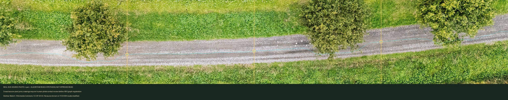
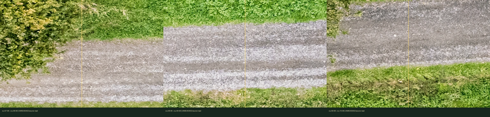

Photographed road — unreviewed trace hypothesis
Original 2025 source road is visible. Cyan path is a computer-generated survey suggestion, NOT a confirmed road centerline, 1780 route, or playable graph.

Three real photo seam contacts

Dietmar Rabich / Wikimedia Commons / CC BY-SA 4.0; source-native terrain preserved; no gameplay enabled.